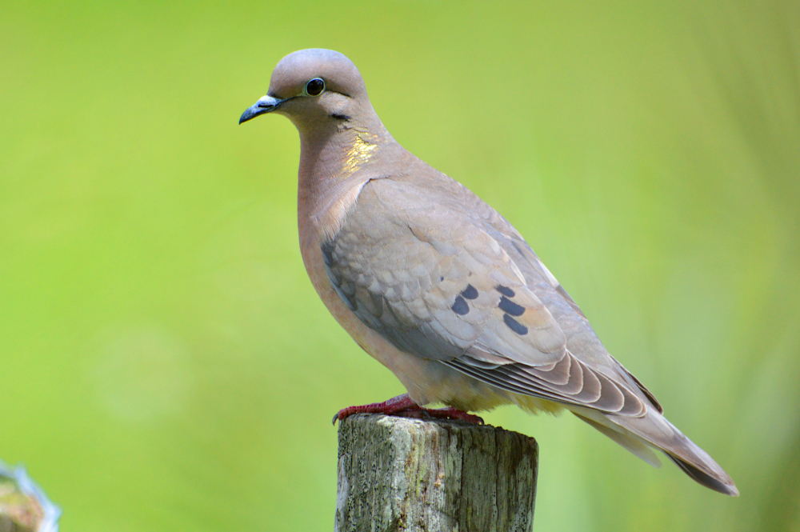
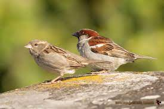
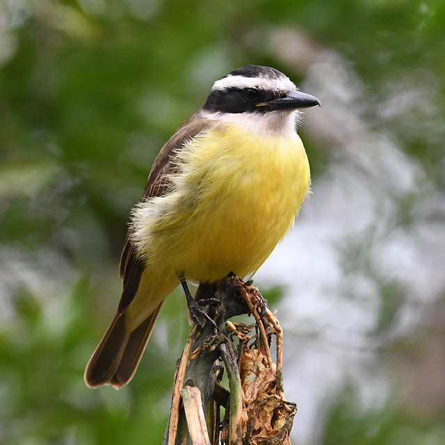
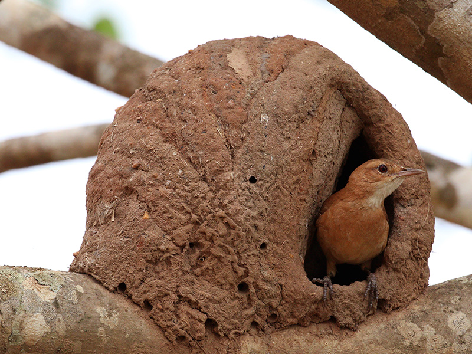
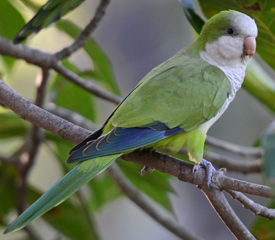
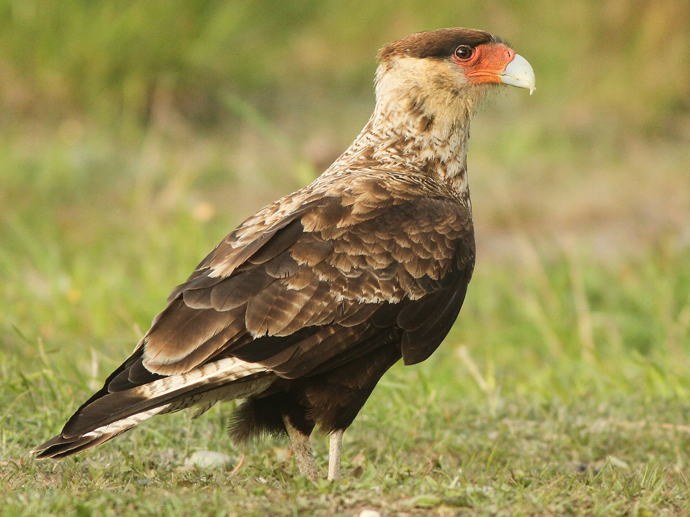

Galeria
GRANIVOROS
Torcaza/Zenaida auriculata
Se las puede ver en bandadas, en zonas pobladas aledañas a la ciudad y zonas rurales. Miden 22cm. Son de color gris, el cuello rosaceo con brillos dorados. En las alas al igual que su cola tienen algunas manchas negras. El diformismo entre hembra y macho es poco perceptible. Ponen entre uno a dos huevos.
Paloma Doméstica/Columba livia

Se las puede observar en bandadas, en ciudades ya que se adaptan muy bien a convivir entre el humano. Es una ave traida de Eurasia la cual ya es considerada autoctona por los años que lleva acondicionada a este hábitat. Mide 32cm. En su mayoria poseen un color gris azulado, aunque existen de varios colores. Tienen brillos verdes en el cuello.
Gorrión/Passer domesticus
Esta ave fue intrducida desde Europa a nuestro continente. Mide 13cm. Los machos poseen Corona gris, dorso estriado castaño y negro, y la zona ventral blanca. Las hembras presentan un color pardo pálido. Se manejan en bandadas pequeñas. Son muy ruidosas por lo que es muy fácil identificarlas.
OMNIVOROS
Benteveo/Pitangus sulphuratus
De color amarillo ventral, con cabeza negra y ceja blanca. Mide 22cm. Es un ave muy territorial por lo que si se siente invadido ataca en picada a su oponente emitiendo fuertes chirridos. Su canto más característico es un marcado “bicho feo” por lo que mucha gente lo conoce con ese nombre.
Cacholote/Pseudoseisura lophotes
.jpg)
Bastante confiado, se mueve con pequeños saltos por el suelo o por los árboles, y realiza vuelos lentos y ondulados. Es de color castaño y mide 23cm. Poseen un notorio copete castaño oscuro. Realiza enormes nidos con mucha cantidad de palitos. Su canto es ruidoso y de fácil distinción sobre todo en el horario de la siesta en zonas un tanto alejadas de la ciudad.
Hornero/Furnarius rufus
Es muy terrícola, se desplaza por el suelo con pequeñas corridas combinadas con pequeños pasos lentos. Mide 18 cm. Posee el dorso pardo, una banda en el ala color canela, cola rufa y zona ventral gris ocrácea. Es considerada el ave nacional por ser un ejemplo de trabajo y esfuerzo realizando su nido de barro y saliva, en forma de hornito. Su nido lo realizan a grandes alturas y se los puede observar en pareja o solitarios.
FRUGIVOROS
Cotorra/Myiopsitta monachus
De color verde, frente y garganta grisáceos, pecho blancuzco. Gran parte de sus alas son de color azul y su pico es anaranjado. Miden 27cm y se las puede observar en grandes nidos de comunales palitos y a gran altura. Se mueven en bandadas y se las puede escuchar comunicarse de una manera bulliciosa entre ellas y frente a alguna amenaza.
Naranjero/Thraupis bonariensis
.jpg)
También conocido como “siete colores” por su llamativa coloración. El macho presenta en su cabeza color celeste violáceo, dorso negro, alas y cola con pequeñas franjas celestes, rabadilla y pecho anaranjado, y zona ventral amarilla. La hembra presenta colores apagados oliváceos y ocre. Mide 17cm y se lo puede observar en los árboles frutales sobre todo en épocas de fructificación.
Zorzal Colorado/Turdus rufiventris
.jpg)
Como su nombre científico lo indica posee su vientre y abdomen de color rufo anaranjado el cual es muy característico. Su zona dorsal es parda. Mide 23cm. Es muy terrícola. Posee un canto muy melodioso por lo que lamentablemente, muchas veces, es ilegalmente entrampado y comercializado lo cual está permitido por ley.
CARNIVOROS
Carancho/Caracara plancus
Poseen un abdomen y notable corona negruzca en la cabeza. Su cuello es blancuzco y su cara rojiza con la mitad del pico gris. Mide 55cm y se lo puede observar en vuelo de grupos pequeños y se lo puede distinguir por las zonas blancas en la zona extrema de sus alas y cola. También se los observa a los costados de rutas alimentándose de restos de animales en descomposición. Realiza sonidos guturales y ásperos con la cabeza volcada hacia atrás.
Jote Cabeza Negra/Coragyps atratus

De color negro en la mayoría de su cuerpo, con manchas blancas en las plumas primarias de sus alas que son de fácil distinción en vuelo. Su cabeza no posee plumas lo que le permite no quedar impregnado de restos ni bacterias en su cuerpo al alimentarse de carroña. Mide aprox. 53cm y la envergadura de sus alas es de 1,40cm por lo que se lo suele confundir con el Condor Andino, aunque éste es de mayor tamaño. En la ciudad se lo puede observar sobrevolando el cielo en grupo, siguiendo las corrientes de aire que les permite mantenerse planeando solo aleteando cada cierto tiempo.
Chimango/Milvago chimango
.jpg)
Pardo pálido, con leve barrado con la zona dorsal, cola blancuzca y zona alar ocre. Mide 37cm, Al igual que el Carancho se las puede observar al costado de las rutas alimentándose de carroña o posadas en postes. También se las observa en grupos en vuelo emitiendo un característico chirrido agudo.